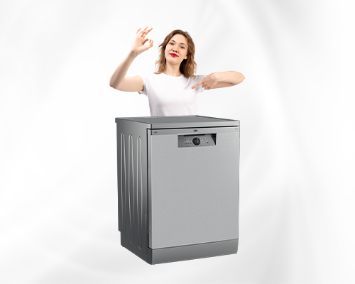
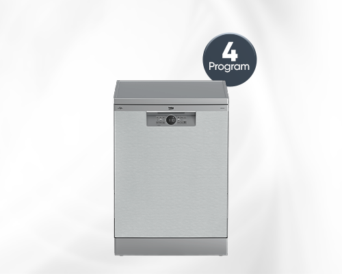
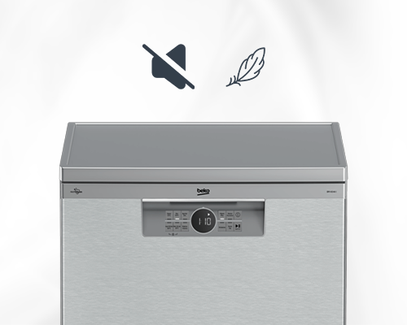
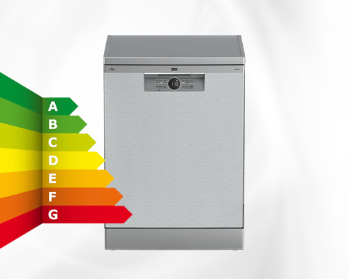
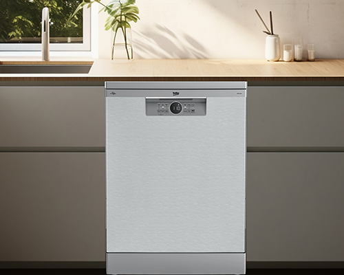

Beko BM 4144 OK I bulaşık makinesi, kullanıcılarına şıklık ve kullanım pratikliği sunar. Bu model, Beko markasının ileri teknolojisi ve estetik tasarımıyla mutfaklarınızda yerini alır. Zarif görünümü, kaliteli malzemeden yapılmış dayanıklı gövdesi, mutfağınıza modern ve sofistike bir dokunuş katar. İster günlük temizlik ihtiyacınızda isterse kapsamlı temizlik gereksinimlerinizde BM 4144 ok i bulaşık makinesi ile mükemmel sonuçlar elde edebilirsiniz. Bulaşıklarınızın parladığını, lekesiz ve pırıl pırıl olduğunu görmek Beko'nun yenilikçi ve kullanıcı odaklı yaklaşımının bir parçasıdır.
Ürün, her türlü yıkama ihtiyacınızı karşılayabilecek çok yönlülüğe sahip olup özellikle yoğun yaşam tarzına sahip kullanıcılar için büyük bir kolaylık sunar. Sadece teknolojisiyle değil, aynı zamanda ergonomik tasarımıyla da kullanıcısına konfor sağlar. Bu model, ihtiyaçlarınızı en iyi şekilde karşılamak için optimize edilmiş farklı yıkama programları sunarak yıkama sürecini zahmetsiz hale getirir. Mutfakta geçirdiğiniz zamanı daha keyifli ve stressiz hale getiren BM 4144 ok i 4 programli inox bulaşik makinesi ile teknolojinin konforunu evinizde yaşayın.

Beko BM 4144 OK I, mutfakta hem şıklığı hem de pratikliği bir arada sunan bir modeldir. Modern çizgilere sahip zarif tasarımıyla dikkat çekerken, gelişmiş mühendislik özellikleri sayesinde bulaşıkları etkin bir şekilde temizler. Beko’nun ileri teknolojisiyle üretilen bu model, günlük yaşamda yüksek performans ve kullanım kolaylığı sağlar. Kompakt ve ergonomik yapısı sayesinde küçük mutfaklarda bile rahatlıkla kullanılabilir. Geniş iç hacmiyle hem tek yaşayan bireyler hem de küçük aileler için mükemmel bir çözümdür.
BM 4144 OK I modeli, paslanmaz çelik gövdesiyle uzun ömürlü kullanım ve şık bir görünüm sunar. Dayanıklı inox yüzey, çizilmelere ve darbelere karşı koruma sağlar. Mat ve parlak yüzeylerin uyumu sayesinde makine, hem modern hem de klasik mutfak dekorasyonlarıyla estetik bir bütünlük oluşturur. Aynı zamanda kolay temizlenebilir yapısı, yoğun kullanımda bile ilk günkü görünümünü korumasına yardımcı olur. Bu sayede makine, mutfağınıza hem zarafet hem de dayanıklılık kazandırır.


Bu modelde yer alan dört farklı yıkama programı sayesinde kullanıcılar, ihtiyaçlarına göre en uygun seçimi yapabilir. Günlük program, standart kirli bulaşıklar için idealdir. Yoğun program, tencere ve tavalar gibi zorlu kirleri kolayca temizler. Ekonomik program, su ve enerji tasarrufu sağlar; hızlı program ise kısa sürede etkili temizlik sunar. Bu seçenekler, hem zamandan hem de enerjiden tasarruf etmenizi sağlarken, her tür kir seviyesinde mükemmel temizlik performansı elde etmenizi sağlar.
Enerji sınıfı D olan Beko BM 4144 OK I, enerji ve su kullanımında dengeli bir performans sunar. Gelişmiş yıkama teknolojisi, düşük enerjiyle yüksek temizlik kalitesi elde etmenizi sağlar. Günlük kullanımda minimum enerji harcayarak çevreye ve bütçenize katkıda bulunur. Beko’nun çevre dostu üretim anlayışıyla tasarlanan bu model, doğayı korurken etkili temizlik performansından ödün vermez.


Sadece 48 dB çalışma ses seviyesine sahip olan BM 4144 OK I, sessiz motor teknolojisiyle dikkat çeker. Özellikle açık mutfaklarda ve gece kullanımında rahatsızlık yaratmadan çalışır. Düşük titreşimli motor yapısı sayesinde sabit ve sessiz bir yıkama süreci sunar. Bu özellik, evde huzurlu bir atmosfer yaratmak isteyen kullanıcılar için idealdir. Konforlu, sessiz ve istikrarlı çalışma performansıyla BM 4144 OK I, modern yaşam alanlarına mükemmel uyum sağlar.
Solo tasarımı sayesinde kolayca monte edilebilen BM 4144 OK I, standart mutfak dolaplarına tam uyum sağlar. Kompakt ölçüleri küçük mutfaklarda bile yer tasarrufu sunar. Kurulum süreci oldukça basittir ve kullanıcı dostu kılavuzlarla desteklenir. Ayrıca Beko’nun geniş servis ağı ve Jebinde güvencesi sayesinde kullanıcılar satış sonrası destek, bakım ve garanti hizmetlerinden kolayca yararlanabilir. Beko kalitesiyle üretilen bu model, uzun ömürlü, güvenilir ve estetik bir kullanım deneyimi sunar.